4.2 Sorting
- Sorting is a process of arranging items in ascending or descending order.
- Sorting is an operation that segregates items into groups according to specified criterion
Example :
- Sorting Books in Library (Dewey system)
- Sorting Individuals by Height (Feet and Inches)
- Sorting Movies in Blockbuster (Alphabetical)
- Sorting Numbers (Sequential)
Sorting - Review of Complexity
- Most of the primary sorting algorithms run on different space and time complexity.
- Time Complexity is defined to be the time the computer takes to run a program (or algorithm in our case).
- Space complexity is defined to be the amount of memory the computer needs to run a program.
Sorting - Types
Internal sorting
- The data that has to be sorted will be in the main memory always, implying faster access.
- Complete sorting will happen in main memory.
- Ex : Insertion sort, quick sort, heap sort, radix sort.
External sorting
- Data will be on disks/tapes, i.e. outside main memory because data can s huge and cannot be stored in main memory.
-
- While sorting ,the data will be pulled over in chunks from disk to main memory.
- Later all the sorted data will be merged and stored back to disk, where it can fit.
- Example : External merge sort
Sorting Algorithms
- Bubble Sort
- Selection Sort
- Insertion Sort
- Merge Sort
- Quick sort
- Shell Sorts
- Heap Sort
- Radix Sort
- Swap Sort
Performance of sorting techniques are compared in terms of computational complexity, time complexity and space complexity.
4.2.1 Bubble sort
Compare each element (except the last one) with its neighbor to the right
- If they are out of order, swap them
- This puts the largest element at the very end
- The last element is now in the correct and final place
Compare each element (except the last two) with its neighbor to the right
- If they are out of order, swap them
- This puts the second largest element next to last
- The last two elements are now in their correct and final places
Compare each element (except the last three) with its neighbor to the right
- Continue as above until you have no unsorted elements on the left
Example of bubble sort
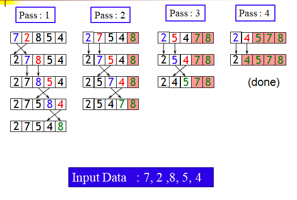
Implementation - Bubble sort
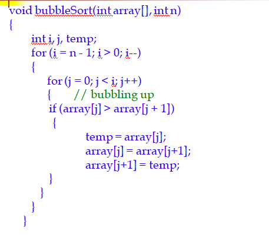
Analysis of bubble sort
- Outer loop is executed n-1 times (call it n, close enough)
- Each time the outer loop is executed, the inner loop is executed n-1 times at first, linearly dropping to just once.
- On average, inner loop executes about n/2 times for each execution of the outer loop
- In the inner loop, the comparison is always done (constant time), the swap might be done (also constant time)
- Result is n * n/2 * k, that is, O(n2/2 + k) = O(n2)
4.2.2 Selection sort
Given an array of length n,
- Search elements 0 through n-1 and select the smallest
- Swap it with the element in location 0
- Search elements 1 through n-1 and select the smallest
- Swap it with the element in location 1
- Search elements 2 through n-1 and select the smallest
- Swap it with the element in location 2
- Search elements 3 through n-1 and select the smallest
- Swap it with the element in location 3
- Continue in this fashion until there's nothing left to search
Example of selection sort
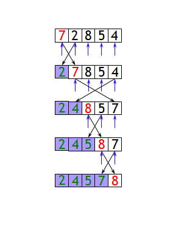
Implementation - selection sort
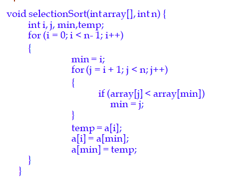
Example and analysis of selection sort
- The selection sort might swap an array element with itself--this is harmless, and not worth checking for
- Analysis:
- The outer loop executes n-1 times
- The inner loop executes about n/2 times on average (from n to 2 times)
- Work done in the inner loop is constant (swap two array elements)
- Time required is roughly (n-1)*(n/2)
- You should recognize this as O(n2)
4.2.3 Insertion sort
- Insertion sort consists of n - 1 passes.
- For pass p = 1 through n-1,
- insertion sort ensures that the elements in positions 0 through p are in sorted order.
- Insertion sort makes use of the fact that elements in positions 0 through p - 1 are already known to be in sorted order.
- This means:
- Finding the element's proper place
- Making room for the inserted element (by shifting over other elements)
- Inserting the element
One step of insertion sort
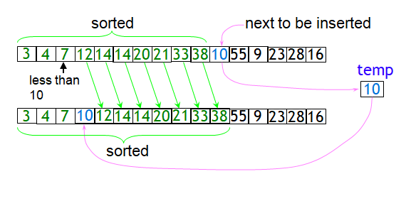
Implementation - Insertion sort
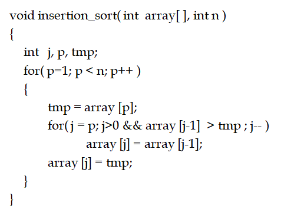
Example
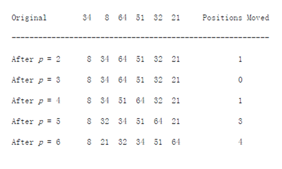
Analysis of insertion sort
- We run once through the outer loop, inserting each of n elements; this is a factor of n
- On average, there are n/2 elements already sorted
- The inner loop looks at (and moves) half of these
- This gives a second factor of n/4
- Hence, the time required for an insertion sort of an array of n elements is proportional to n2/4
- Discarding constants, we find that insertion sort is O(n2)
4.2.4 Shell Sort
- Shell sort, named after its inventor, Donald Shell, was one of the first algorithms to break the quadratic time barrier.
- It works by comparing elements that are distant.
- The distance between comparisons decreases as the algorithm runs until the last phase, in which adjacent elements are compared.
- For this reason, Shell sort is sometimes referred to as diminishing increment sort.
- Shell sort uses a sequence, h1, h2, . . . , ht, called the increment sequence.
- Any increment sequence will do as long as h1= 1, but obviously some choices are better than others.
- After a phase, using some increment hk, for every i, we have a[i] <= a[i+hk] (wherever this makes sense);
- All elements spaced hk apart are sorted. The file is then said to be hk-sorted.
- An important property of Shellsort is that an hk -sorted file that is then hk-1 -sorted remains hk -sorted.
Shell Sort - Implementation
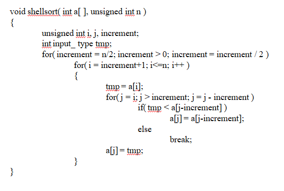
Example
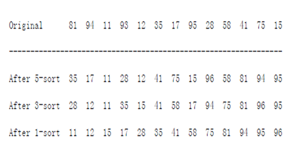
4.2.5 Heap Sort
- The priority queue can be used to sort N items by inserting every item into a binary heap.
- Then every item is extracted by calling deleteMin N times, thus sorting the result.
- An algorithm based on this idea is heap sort.
- It is an O(N logN) worst-case sorting algorithm.
- The main problem with this algorithm is that it uses an extra array for the items exiting the heap.
We can avoid this problem as follows:
- After each deleteMin, the heap shrinks by 1.
- Thus the cell that was last in the heap can be used to store the element that was just deleted.
- Using this strategy, after the last deleteMin, the array will contain all elements in decreasing order.
- If we want them in increasing order we must use a max heap.
Max heap after the build Heap phase for the input sequence
59,36,58,21,41,97,31,16,26,53
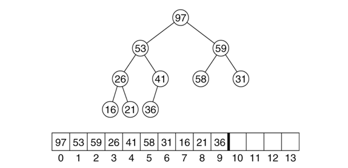
Heap after the first deleteMax operation

Heap after the Second deleteMax operation

Heap Sort - Implementation


Analysis of Heap Sort
- It is an O(N log N) algorithm.
- First phase: Build heap O(N)
- Second phase: N deleteMax operations: O(NlogN).
- Detailed analysis shows that, the average case for heap sort is poorer than quick sort.
- Heap sort usually takes about twice as long as quicksort.
- Heap sort therefore should be regarded as something of an insurance policy:
- On average, it is more costly, but it avoids the possibility of O(N2).
4.2.6 Quicksort
- Fastest known sorting algorithm in practice
- Average case: O(N log N)
- Worst case: O(N2)
- But, the worst case seldom happens.
- Another divide-and-conquer recursive algorithm, like mergesort


Pick a pivot
Use the first element as pivot
- if the input is random, ok
- if the input is presorted (or in reverse order)
- all the elements go into S2 (or ss1)
- this happens consistently throughout the recursive calls
- Results in O(n2) behavior (Analyze this case later)
Choose the pivot randomly
- generally safe
- random number generation can be expensive
Better Pivot - Median of three
We will use median of three
Compare just three elements: the leftmost, rightmost and center
Swap these elements if necessary so that
- A[left] = Smallest
- A[right] = Largest
- A[center] = Median of three
Pick A[center] as the pivot
Swap A[center] and A[right - 1] so that pivot is at second last position

Pseudo-code


Small arrays
- For very small arrays, quicksort does not perform as well as insertion sort
- How small depends on many factors, such as the time spent making a recursive call, the compiler, etc
- Do not use quicksort recursively for small arrays
- Instead, use a sorting algorithm that is efficient for small arrays, such as insertion sort
4.2.7 Merge Sort
Divide and Conquer Strategy
Recursive in structure
- Divide the problem into sub-problems that are similar to the original but smaller in size
- Conquer the sub-problems by solving them recursively. If they are small enough, just solve them in a straightforward manner.
- Combine the solutions to create a solution to the original problem
Merge Sort Through Divide & Conquer
Sorting Problem: Sort a sequence of n elements into non-decreasing order.
- Divide: Divide the n-element sequence to be sorted into two subsequences of n/2 elements each
- Conquer: Sort the two subsequences recursively using merge sort.
- Combine: Merge the two sorted subsequences to produce the sorted answer.
Merge Sort - Example

Merge-Sort (A, p, r)
INPUT: a sequence of n numbers stored in array A
OUTPUT: an ordered sequence of n numbers

Initial Call: MergeSort(A, 0, n-1)
 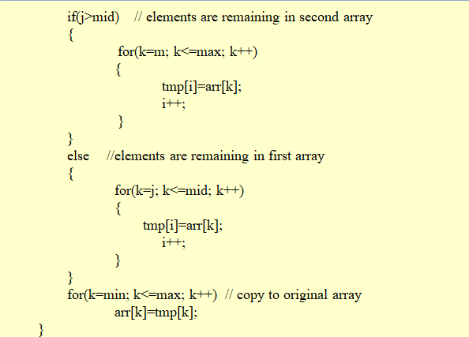
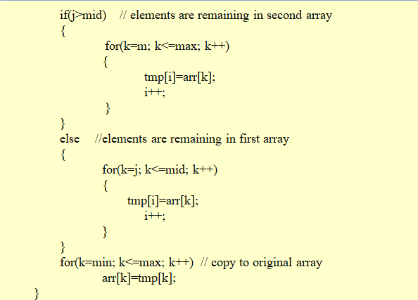
Analysis of Merge Sort
- Running time T(n) of Merge Sort:
- Divide: computing the middle takes Θ(1)
- Conquer: solving 2 subproblems takes 2T(n/2)
- Combine: merging n elements takes Θ(n)
- Total:
- T(n) = Θ(1) if n = 1
- T(n) = 2T(n/2) + Θ(n) if n > 1
- T(n) = Θ(n log n)